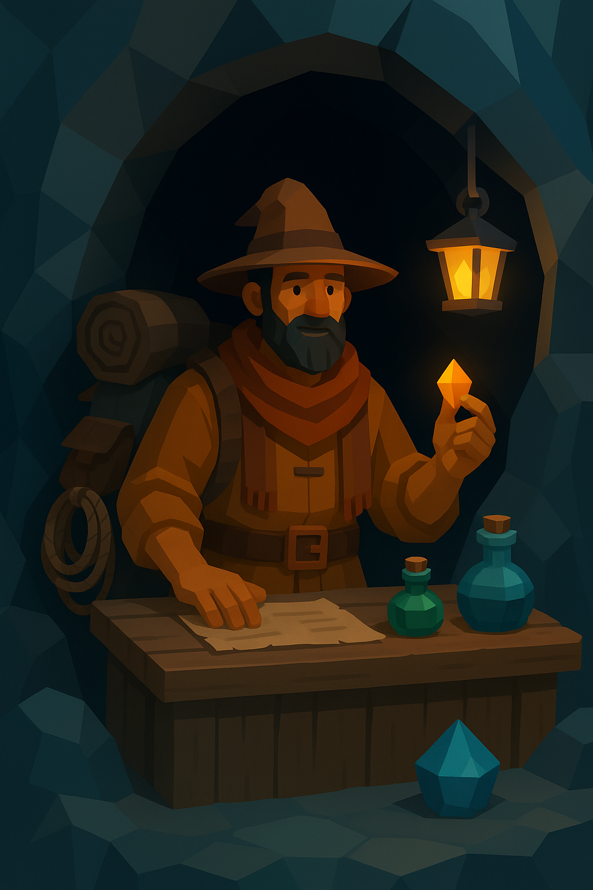

Age: Unknown (appears mid 40s but could be much older)
Role: A mysterious travelling merchant who appears at the end of each level to sell upgrades, tools, charms, and survival items in exchange for earned XP.
Appearance: Temba dresses in layered travelling robes stitched from many different cultures’ fabrics. He carries a pack overflowing with trinkets, glowing stones, rope coils, dried herbs, and odd mechanical gadgets. His eyes have a faint shimmer that suggests he knows far more than he lets on.
Personality: Warm, talkative, and mischievous. Temba speaks in riddles and jokes but always gives the player exactly the hint they need. He seems to appear and disappear without leaving footprints, as if the mountain itself allows him to pass.
Motivations: To help worthy climbers survive the mountain’s trials. He trades goods not for profit but to ensure that the right person reaches the summit.
Goals: Offer equipment upgrades, restorative items, charms that weaken the mountain’s illusions, and tools that open optional paths. Encourage the player to keep pushing upward through the challenges.